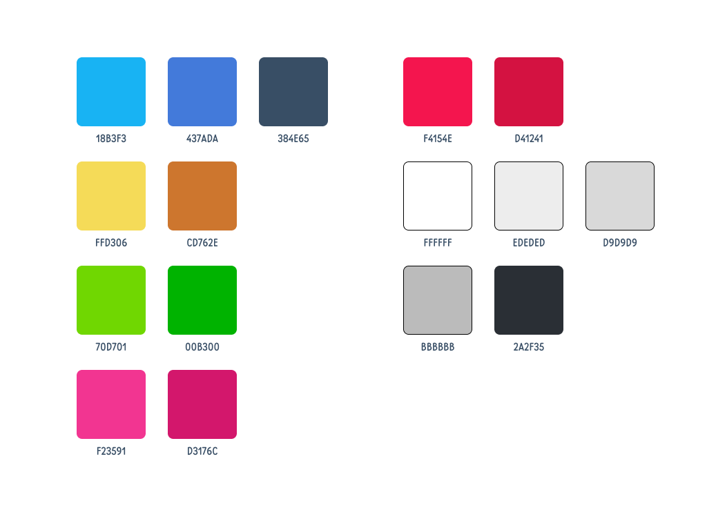

Balancing old and new
In 2023, i worked at Space Bit Games as a UI/UX Designer, and for the majority of my time there i worked on Logic Pic, a mobile game with Nonogram mechanics.
My demands weren't very high, mostly throwing together a sale banner whenever one was needed. So, my main assignment was experimentation. Logic Pic is a relatively old game, released in 2014, and its visuals stood mostly the same over that time. I was tasked with touching up the style, changing things up where i could see an improvement.
One problem, however, is that i couldn't be too drastic. Metrics indicated that a good margin of the userbase was composed of players that have been with that interface for years now, and likely wouldn't respond well to radical changes. Many designers and artists were tasked with this challenge over the years, so i was standing in the shoulders of giants, of sorts.
Before anything major...
First of all, i studied the app from tip to toe. The first thing that caught my eye were the small inconsistencies across different parts of the interface. Color usage across the app that are close enough to pass as the same, but aren't; Irregular button sizes; The UI felt cluttered in many places.
Overall, i felt like the interface lacked some consistency. As a game that has been worked on for years, with features being built on top of each other, it is understandable that things would eventually break the mold. So, i set out to make some suggestions as to how i could padronize some things without disrupting much of what players are already used to.
My first step was to select which colors were most consistently used across the interface, and try to use them where it felt appropriate. So, for instance, if a button has a shade of yellow in one page, and another button has a different, but close enough shade in the next, i'd see which one would fit better with the rest of the elements.
This is the color palette i arrived at.
With that in hand, i